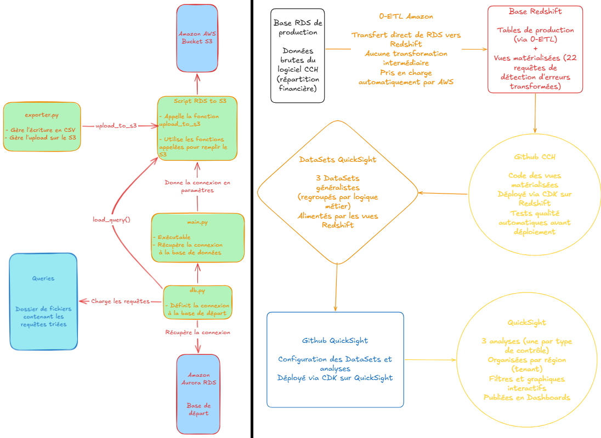
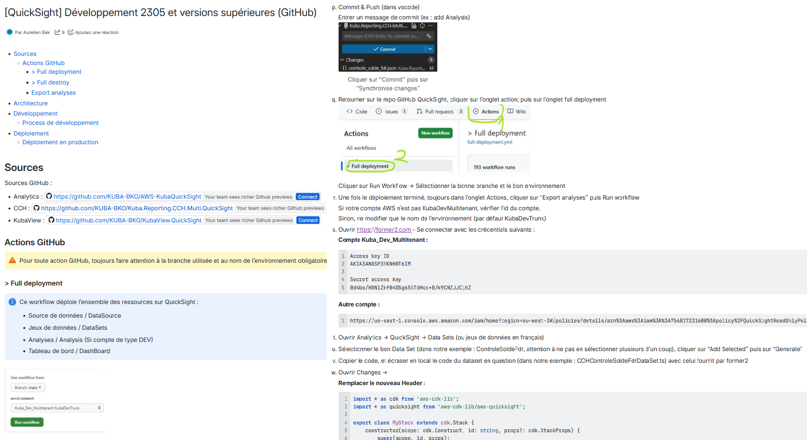

Suivi de projet
Cette section présente les compétences de gestion de projet développées lors du stage, illustrées par des traces concrètes et évaluées dans un bilan réflexif.
Pivot vers l'approche 0-ETL

Trace 4 : Schéma comparatif montrant l'abandon du pipeline Python au profit de l'approche 0-ETL. Les deux schémas côte à côte illustrent la simplification de l'architecture.
Savoir-faire mobilisés
- 01 Accepter l'abandon d'un travail accompli
- 02 Comprendre rapidement une nouvelle approche technique
- 03 Rebondir face à un blocage technique en anticipant d'autres tâches
- 04 Chercher la solution la plus simple plutôt qu'une usine à gaz
Descriptif général
La Trace 4 montre le changement majeur d'architecture intervenu le jeudi de la semaine 2. Après une semaine complète de développement sur le pipeline Python (script de 1600+ lignes, PoC Docker/MinIO, base de données fictive), une réunion a conduit à l'abandon total de cette approche au profit du modèle 0-ETL déjà intégré au logiciel CCH. Mon travail précédent ne servait plus.
Cette trace représente un moment clé du stage : la capacité à accepter qu'un travail accompli soit abandonné pour une solution meilleure, et à basculer immédiatement sur une nouvelle approche sans perdre de temps.
Descriptif des savoir-faire
01 Accepter l'abandon d'un travail accompli
J'ai ressenti de la frustration quand on m'a expliqué pourquoi mon travail était inutile. C'est le genre de situation qui pouvait être très frustrante pour moi à l'IUT, où les projets sont cadrés et les consignes fixes. Mais j'ai réussi à passer outre rapidement. J'ai compris qu'en entreprise, les priorités évoluent et qu'il faut savoir remettre en question son travail quand une meilleure solution apparaît.
La réunion du jeudi semaine 2 rassemblait Yannick Nya (mon manager), Adrien Naudet (manager de l'équipe), et des développeurs qui utiliseront ma solution. Ils m'ont expliqué que mon approche était intéressante mais complexe, alors que le 0-ETL venait d'être déployé en production et était utilisable. Afin que mon travail ne devienne pas obsolète, nous avons adapté la solution. Le script Python a été jeté complètement.
02 Comprendre rapidement une nouvelle approche technique
Le pivot vers le 0-ETL m'a obligé à comprendre rapidement le fonctionnement de Redshift et des vues matérialisées. Le 0-ETL était l'architecture prévue pour la prochaine version du logiciel CCH, c'était donc une approche déjà validée par l'entreprise. J'ai récupéré les accès au Git du logiciel CCH pour m'imprégner de leurs méthodes, et j'ai commencé à créer des vues matérialisées sur ma branche dédiée dès le jeudi après-midi.
Ce changement radical m'a appris à m'adapter rapidement. Avant le stage, je n'avais jamais vécu un changement de direction aussi radical dans un projet. Cette expérience a changé ma façon d'aborder les projets : je suis maintenant plus flexible et moins attaché à mes solutions initiales.
03 Rebondir face à un blocage technique en anticipant d'autres tâches
En semaine 6, quand mon environnement technique était complètement indisponible à cause de la mise à jour de la base de test, j'ai pivoté sur la création de graphiques fictifs sur QuickSight à partir de données inventées. Cela m'a permis de rester productif malgré les blocages et de prendre de l'avance sur la conception visuelle des dashboards.
Cette capacité à rebondir est essentielle en entreprise. Les projets ne se déroulent jamais exactement comme prévu, et savoir gérer les temps de blocage en anticipant sur d'autres tâches productives fait la différence.
04 Chercher la solution la plus simple plutôt qu'une usine à gaz
En semaine 6, face au problème de l'historisation des données, j'ai d'abord pensé à une architecture lourde (fonction Lambda quotidienne, stockage CSV sur S3, réimportation). Après avoir échangé avec un collègue, j'ai réalisé qu'en modifiant simplement les requêtes d'origine (en retirant les filtres temporels), la vue pouvait d'elle-même conserver toutes les données. Cette solution simple fonctionne parfaitement et reste facile à maintenir.
Cette expérience m'a appris à chercher la solution la plus directe plutôt que de monter une usine à gaz. Le pivot vers le 0-ETL m'avait déjà montré qu'une approche plus simple était souvent meilleure, et j'ai appliqué cette leçon tout au long du stage.
Changements concrets apportés par le 0-ETL
Le passage au 0-ETL a simplifié considérablement l'architecture : plus besoin de S3, plus besoin de conversions multiples des données. Les vues matérialisées sont directement "appelables" dans les datasets QuickSight, ce qui réduit la complexité et les points de défaillance potentiels. Cette simplification a aussi rendu la maintenance beaucoup plus facile pour les équipes qui prendront le relais après mon départ.
Documentation et préparation de la passation

Trace 5 : Montage de plusieurs captures montrant la documentation publiée sur la plateforme interne de Kuba, incluant les descriptions des requêtes (technique et métier) et le tutoriel "Comment créer une nouvelle analyse".
Savoir-faire mobilisés
- 01 Rédiger une documentation technique et métier accessible
- 02 Créer un tutoriel pas-à-pas pour des utilisateurs de tous niveaux
- 03 Intégrer des commentaires pédagogiques dans le code
Descriptif général
La Trace 5 montre la documentation que j'ai rédigée et publiée sur la plateforme interne de Kuba, accessible à tous les employés. Elle comprend deux volets : une documentation des requêtes (expliquant la logique technique et métier) et un tutoriel "Comment créer une nouvelle analyse" détaillant chaque étape de zéro.
Cette documentation est essentielle pour la passation. Elle permet à n'importe quel développeur de comprendre et maintenir le travail réalisé, quel que soit son niveau de compétence.
Descriptif des savoir-faire
01 Rédiger une documentation technique et métier accessible
J'ai documenté chaque requête en expliquant à la fois le côté technique (jointures, filtres, transformations) et le côté métier (reversals, mouvements de fonds, soldes d'agents). Le but était que le prochain développeur ne rencontre pas les mêmes difficultés logiques et techniques que moi. J'ai aussi dû comprendre suffisamment la logique métier pour la vulgariser et la rendre accessible à des personnes non techniques.
La documentation technique décrit précisément ce que fait chaque requête, quelles tables elle utilise, et quelles transformations elle applique. La documentation métier explique le contexte business : pourquoi cette erreur est problématique, quel impact elle a sur la répartition financière, et comment la corriger.
02 Créer un tutoriel pas-à-pas pour des utilisateurs de tous niveaux
Le tutoriel "Comment créer une nouvelle analyse" a été conçu pour être accessible à tous, quel que soit le niveau de compétence. Il y avait trop d'étapes pour les détailler ici, mais elles couvraient chaque étape dans la console AWS (création du DataSet, configuration des paramètres, déploiement) et les modifications à faire dans le code en local pour que tout soit propre et conforme à ce qui existe déjà.
J'ai inclus des captures d'écran de la console AWS à chaque étape, des explications pas à pas, et des exemples de code à copier-coller. L'objectif était que n'importe qui puisse reproduire le processus sans avoir à me poser de questions après mon départ.
03 Intégrer des commentaires pédagogiques dans le code
J'ai intégré des commentaires détaillés directement dans le code SQL pour expliquer la logique des jointures et des filtres appliqués. Ces commentaires facilitent la maintenance future et aident les prochains développeurs à comprendre rapidement les choix effectués.
Par exemple, pour une jointure complexe entre plusieurs tables, j'ai ajouté un commentaire expliquant pourquoi cette jointure est nécessaire, quelles données elle permet de récupérer, et quels pièges éviter (comme les doublons ou les valeurs NULL). Je n'ai pas d'exemple précis sous la main sur cet ordinateur, mais l'idée était de rendre le code auto-explicatif autant que possible.
Apprentissage et prise de conscience
Avant le stage, je documentais mes projets de l'IUT avec des README basiques, sans vraiment me soucier de la maintenance future. J'ai appris l'importance de la documentation en voyant les difficultés que j'ai moi-même rencontrées avec des documentations peu fournies, notamment lors de la récupération de la base à jour en semaine 5 où j'ai perdu une journée complète à cause d'un manque de documentation.
Cette expérience m'a convaincu de l'importance de bien documenter. La documentation est un investissement qui fait gagner du temps à long terme, même si cela prend du temps à rédiger sur le moment.
Retours et utilisation
Je ne sais pas si ma documentation a été utilisée après mon départ, car je n'ai pas eu de retours directs. Cependant, je l'ai conçue pour être complète et accessible, en me mettant à la place d'un développeur qui découvrirait le projet sans aucune connaissance préalable. Si elle est utilisée, elle devrait permettre une prise en main rapide et une maintenance sereine.